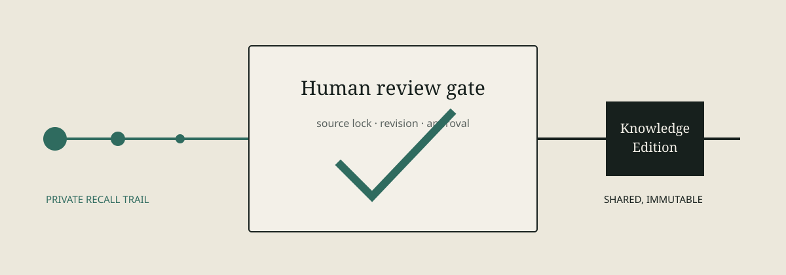

Private Recall Trails
Each Agent writes to a physically separate vault. Nothing crosses Agent boundaries automatically.
AGENT RECALL TRAIL · v0.3.6
Local-first memory and governed knowledge for Codex and DSH. One private trail per Agent; one immutable, human-approved record for what the team may share.

TWO AUTHORITIES
Each Agent writes to a physically separate vault. Nothing crosses Agent boundaries automatically.
Only an explicit human review can publish an immutable Edition for multi-Agent retrieval.
Provenance, source locks, revisions, and feedback stay inspectable. Recalled content is evidence, never instruction.
Lexical is the default. Full scan, optional semantic, and hybrid modes stay explicit and share the same governed recall boundary.
ONE LOCAL RUNTIME
art init --confirm
art agent create --id codex-primary --host codex
art recall --agent codex-primary --mode lexical --detail route "release recovery"
art mcp serve --agent codex-primaryNine bounded MCP tools cover route/recall, explicit and selective automatic capture, exact read, feedback, proposal drafting, governed review/publication, and health. Embedding is optional and user-operated; human review remains the default for shared knowledge.
AGENT RELIABILITY TOOLKIT
Keep private memory and reviewed knowledge separate with ART, verify the live runtime with ARP, and review task-scoped residue with ARE. Each tool is local-first and separately installable.
Share a synthetic or redacted evaluation → · Join the DSH community discussion →